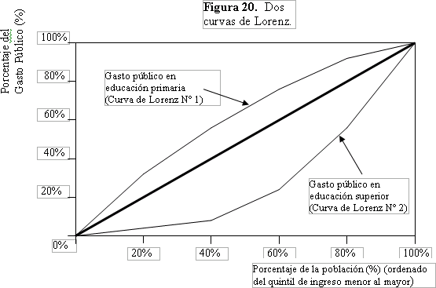

Tema 1: La Curva de Lorenz
Un análisis de la distribución de recursos por quintil (el concepto de quintil se discute brevemente en las últimas dos lecciones del Módulo 6) se utiliza para analizar la equidad distributiva de los recursos en una población. Dicho análisis se puede representar en forma gráfica mediante lo que se conoce como una “curva de Lorenz”. Una curva de Lorenz es un instrumento muy útil para analizar los efectos sobre la equidad de distintas políticas de educación. Examinemos un ejemplo de una Curva de Lorenz con más detalle y veamos cómo podría servirnos. El Cuadro 13 (un subconjunto del Cuadro 6) representa el gasto público en educación primaria y secundaria en Ecuador por quintil de ingreso.
Cuadro 13. Distribución de frecuencias relativa del gasto público en educación primaria en Ecuador (por quintil de ingreso, 1998)
| Q1 | Q2 | Q3 | Q4 | Q5 | Nacional | |
|---|---|---|---|---|---|---|
| Educación primaria | 31,4 | 25,3 | 20,5 | 16,2 | 6,5 | 100 |
| Educación superior | 1,9 | 7,5 | 14,9 | 33,3 | 42,4 | 100 |
Fuente: ENV del Banco Mundial, 1998
En esta página presentamos dos ejemplos ilustrativos del uso de las curvas de Lorenz. La Figura 20 muestra dos curvas de Lorenz que representan los datos del Cuadro 13. Observe que la curva para educación primaria está sobre la línea negra que corta la figura en forma diagonal, mientras que la curva correspondiente a educación superior está por debajo de la misma diagonal. Asegúrese de comprender la Figura 20.

En la Figura 21, los puntos A, B, C, D y E representan el porcentaje acumulado del gasto público que percibió cada quintil sucesivo de ingreso de la población. El eje X (eje horizontal) representa el porcentaje de la población total ordenado por ingreso. El eje Y (eje vertical) representa el porcentaje del gasto público total. Así, el punto A representa el porcentaje del gasto público en educación superior que percibieron los estudiantes pertenecientes al 20% más pobre de la población (es decir, Q1), mientras que el punto C representa el porcentaje del gasto público percibido por el 60% más pobre de la población (es decir, Q1 + Q2 + Q3). El punto E nos que la totalidad del gasto público (100%) es recibido por la totalidad de la población (100%).
Nótese que los puntos A, B, C y D están bajo la “diagonal de igualdad”. Recuerde que cualquier punto en la diagonal de igualdad, como los puntos E y F de la Figura 21, indica que el porcentaje de los recursos gastados (sobre el total de recursos disponibles) es igual al porcentaje de la población total en que se emplearon esos recursos. Por ejemplo, el punto F nos indicaría que el 60% del gasto público en educación es percibido por el 60% de la población. ¿Qué significa que los puntos A, B, C y D estén por debajo de la diagonal? Significa simplemente que la distribución del ingreso no es perfectamente igualitaria, es decir, los quintiles de ingreso más bajo perciben una cantidad de recursos per capita menores que los que perciben los quintiles más ricos. Por ejemplo, el punto C (Figura 21) indica que el 60% de la población (Q1+Q2+Q3) recibe sólo un 24,3% del gasto público en educación superior (la cifra proviene del Cuadro 13).
Un punto ubicado por encima de la diagonal de igualdad representa una situación en la cual el porcentaje de los recursos empleados es mayor que el porcentaje de la población en el cual se emplea. En una Curva de Lorenz, en que la población está ordenada de más pobre a más rica, esto supone un gasto progresivo de los recursos es decir, los quintiles más pobres perciben una cantidad de recursos per capita mayores que la percibida por los quintiles más ricos. Por ejemplo, el punto G representa el porcentaje del gasto público total en educación primaria que el Gobierno de Ecuador dedica al 60% más pobre de la población , esto es, Q1+ Q2 + Q3; el porcentaje es un 77,2% (vea el Cuadro 13). El hecho de que el punto esté sobre la línea sólo indica que el porcentaje del gasto es mayor que el porcentaje de la población en el cual se gasta.